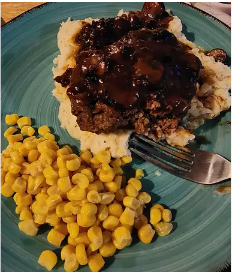

Salisbury Steak

Description
Salisbury steak is a variation of the Hamburg steak.
Salisbury steaks are usually made from a blend of meat.
Ingredients
- 500g ground beef
- 1 cup flour
- Breadcrumbs
Steps
- Make patty shape
- Season patty and put into pan
- Cook gravy, put over patty